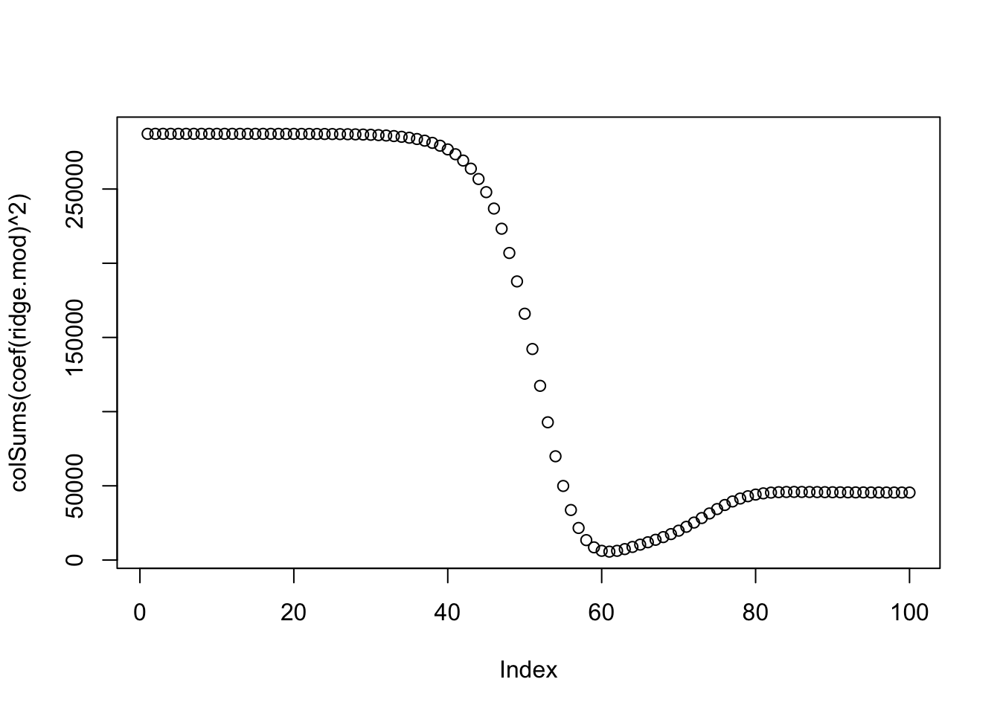

Some salary data are missing in the dataset, which are represented as NA in R. In that case, most operations on Salary will also return NA:
mean(Hitters$Salary)
[1] NA
The na.omit() function removes all of the rows that have missing values in any variable:
Hitters=na.omit(Hitters)dim(Hitters)
[1] 263 20
mean(Hitters$Salary)
[1] 535.9259
2glmnet
We will use the glmnet package in order to perform ridge regression and the lasso. The main function in this package is glmnet(), which can be used to fit ridge regression models, lasso models, and more.
This function has slightly different syntax from other model-fitting functions that we have encountered. In particular, we must pass in an x matrix as well as a y vector, and we do not use the y ∼ x syntax.
We will now perform ridge regression and the lasso in order to predict Salary on the Hitters data.
x =model.matrix(Salary ~ ., Hitters)[,-1]y = Hitters$Salary
The model.matrix() function is particularly useful for creating x; not only does it produce a matrix corresponding to the 19 predictors, but it also automatically transforms any qualitative variables into dummy variables.
The latter property is important because glmnet() can only take numerical, quantitative inputs.
3 Ridge regression
The glmnet() function has an alpha argument that determines what type of model is fit.
By default, the glmnet() function performs ridge regression for an automatically selected range of values. However, here we have chosen to implement the function over a grid of values ranging from to .
By default, the glmnet() function standardizes the variables so that they are on the same scale. This can be expected as we always scale the data first before performing lasso or ridge regrression.
Associated with each value of is a vector of ridge regression coefficients, stored in a matrix that can be accessed by coef().
dim(coef(ridge.mod))
[1] 20 100
When a large is used, we expect the coefficient estimates to be much smaller, in terms of norm.
plot(colSums(coef(ridge.mod)^2))

4 Cross-validation
We need to do cross-validation to select the tuning parameter . To do that, We can use the built-in cross-validation function, cv.glmnet().
By default, the function performs ten-fold cross-validation. This can be changed using the argument nfolds.
Note that we set a random seed first so our results will be reproducible, since the choice of the cross-validation folds is random.
Finally, we refit our ridge regression model on the full data set, using the value of chosen by cross-validation, and examine the coefficient estimates.
This is similar to the test MSE of ridge regression with λ chosen by cross-validation. However, the lasso has a substantial advantage over ridge regression in that the resulting coefficient estimates are sparse.
Here we see that 12 of the 19 coefficient estimates are exactly zero. So the lasso model with λ chosen by cross-validation contains only seven variables.